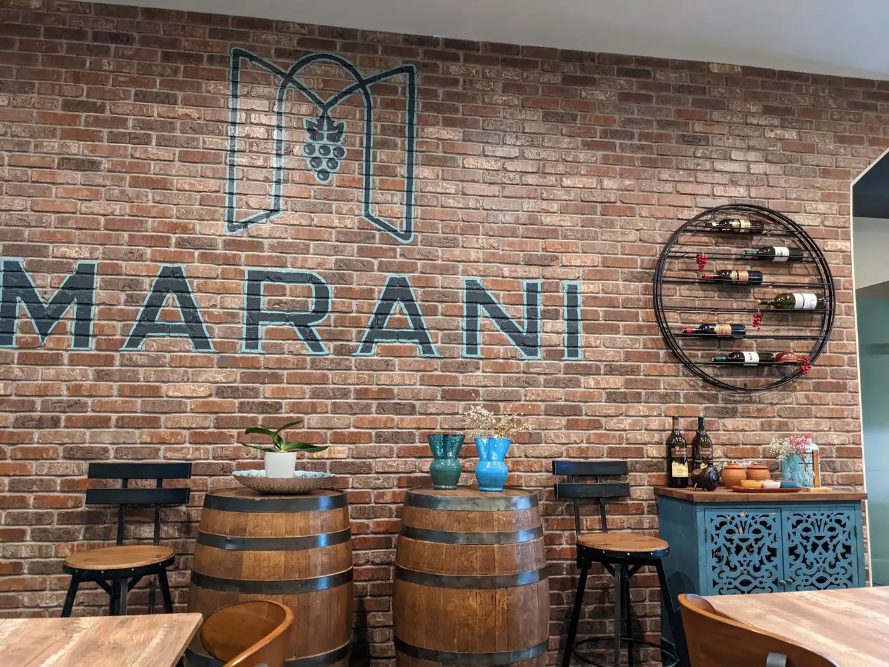
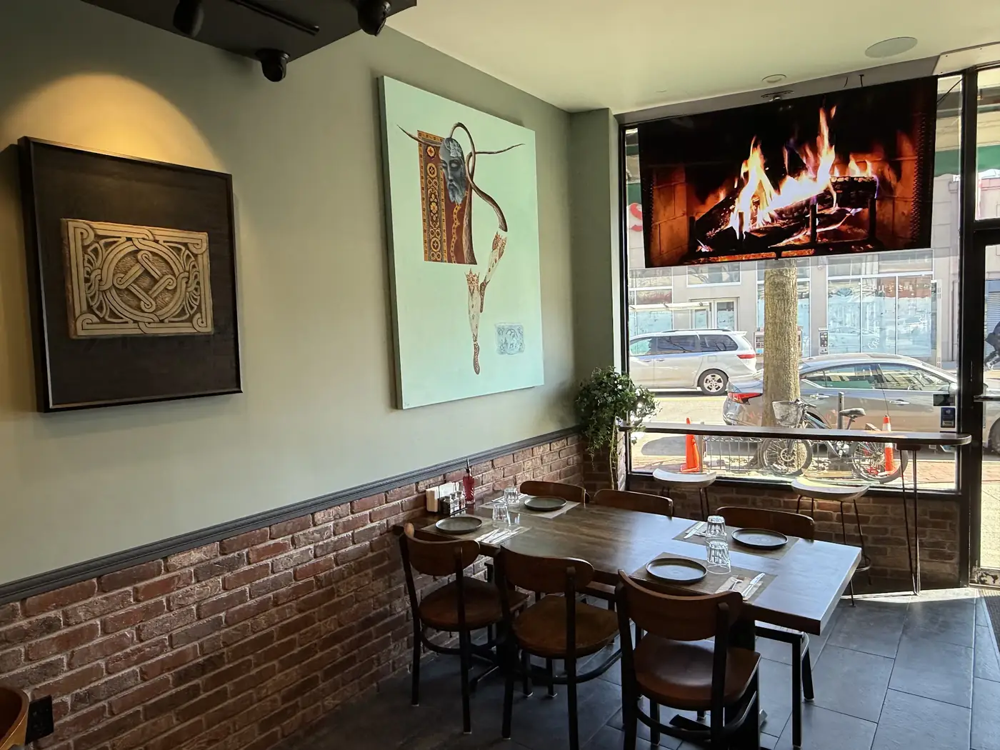

მარანიma·ra·ni, the wine cellar
In Georgia, the marani is where the wine rests and the family gathers.
A marani is the wine cellar of a Georgian home. Wine ages there in clay qvevri buried in the earth, and it is where the table gets set, the toasts begin and nobody hurries home.
Old Marani brings that feeling to Kings Highway: red brick, oak barrels, Georgian art on the walls and a kitchen cooking the dishes Georgians miss most when they are far from home.


- 7 days
- a week, 11 AM to 11 PM
- 4.7
- stars from 733 Google reviews
- 4
- Georgian wines by the glass or bottle
- 7
- khachapuri, lobiani and kubdari from the oven